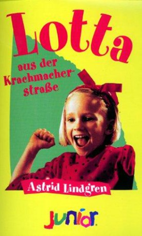

IMDB-Wertung: 5.7 / 10
IMDB-Wertung: 5.7 / 10  Metascore:
Metascore: 
Lotta is angry because she is considered too small to make all the fun things as her older siblings Mia and Jonas can do.
 IMDB-Wertung: 5.7 / 10 Metascore:
Lotta is angry because she is considered too small to make all the fun things as her older siblings Mia and Jonas can do.
Jahr: 1992
Dauer: 75 Minuten
FSK: 0
Land: Schweden Studio: Stamm Film AGTonspuren:
Untertitel:
Auflösung: 720p (1280x720) Größe: 2078 MB
Regisseur: Johanna Hald
Drehbuch: Astrid Lindgren, Astrid Lindgren, Johanna Hald
Soundtrack: Stefan Nilsson, Sixten Sundling
Darsteller:
 Claes Malmberg als Pappa
Claes Malmberg als PappaDatei: X:\Kinder Collections\Astrid Lindgren\Lotta aus der Krachmacherstraße (1992, FSK0, 1280x720).mkv seit 04.09.2018
Festplatte: Kinder-Filme+Trick
 Es gibt insgesamt 26 Filme in der Gruppe 'Kinder Collections\Astrid Lindgren'
Es gibt insgesamt 26 Filme in der Gruppe 'Kinder Collections\Astrid Lindgren'